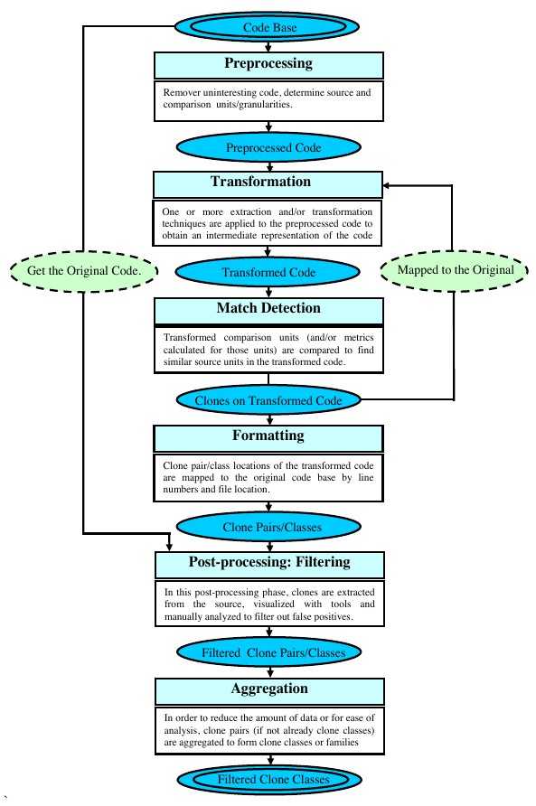

Assignment Introduction: Big Data Analytics
Table of Contents
1 About This Text
This text introduces the Big Data Analytics assignment.
2 Introduction
Every endeavour into the realm of data science should start with a question. That question must:
- provide value to some stakeholder, and
- be answerable by analytical, quanitative means.
Since this course is targeted at Software Engineers, the question we are trying to answer in this assignment is related to a software engineering phenomenon: code clones. In particular, we are asking the question: How many code clones does a particular set of source code files contain?
In the remainder of this section, we discuss the value an answer to this question might provide and how this question can be answered by analytical means.
2.1 What are code clones and why should I care?
A code clone is a piece of code that is duplicated in one or more places within a set of source code files. Typically, code clones are created by copying pieces of code with little or no modifications in order to replicate some functionality. The figure below shows such a code clone.
This clone is not an exact clone. While the structure and logic of the code is equivalent, variable- and methodnames differ. Furthermore, the left side contains commented code that does not exist on the right side. In general, we distinguish between 4 types of code clones [1]:
- Type-1:
- Identical code fragments except for variations in whitespace, layout and comments.
- Type-2:
- Syntactically identical fragments except for variations in identifiers, literals, types, whitespace, layout and comments.
- Type-3:
- Copied fragments with further modifications such as changed, added or removed statements, in addition to variations in identifiers, literals, types, whitespace, layout and comments.
- Type-4:
- Two or more code fragments that perform the same computation but are implemented by different syntactic variants.
But why are code clones a problem? Imagine you need to extend the code shown in the above figure, for example by letting the user change the directory before creating it. You would have to introduce that change in two places (or more, who knows?) and test both. Another scenario is that you identify a bug in the above code but are unaware that the code (and the bug) is replicated somewhere else. Having a code clone detector would be handy in both cases. Once the clones are identified, there are two main strategies on how to handle the problem:
- refactor the code such that the functionality is not duplicated
- maintain a registry of code clones that can be used to lookup clones when changes to the code are made
Note however that code clones are not per se a design flaw to avoid at all costs. As often in engineering, the decision on how to handle a problem depends on the particular situation, code clones not being an exception. You might find the work by Kapser and Godfrey useful as they identify code clone patterns, describe their advantages/disadvantages, long term issues and provide advice on how to manage them [2].
2.2 The code clone detection process
The tasks in this assignment are based upon extending and improving an existing code clone detector (ClonyMcCloneface will be introduced in Sprint Clones101). The detector you will working on is following the generic detection process shown in the figure below (cloned from [1]).

Every clone detector (Roy et al. review more than 40 [1]) implements this generic process.
2.3 Ok, I see the ‘data’ but where is the ‘big’?
The data you will be analysing is source code (even though the principle of clone detection can be applied to any data). Concretely, you will work with the Qualitas Corpus which contains the source code of 112 software systems. Unpacked, the corpus contains ~10GB of data. You might argue that this is by no means Big Data (in terms of volume, but it is also static and quite homogeneous). On the other hand, the data in the corpus is just big enough to make its analysis painstakingly slow or even impossible on a single machine.
In this assignment you’ll work with data that is just big enough to make you think about finding more efficient ways on how to analyse it.
3 TODO Learning Material
3.1 Further Reading
- C. K. Roy, J. R. Cordy, and R. Koschke, “Comparison and evaluation of code clone detection techniques and tools: A qualitative approach,” Science of Computer Programming, vol. 74, no. 7, pp. 470–495, 2009.
- Kapser, Cory J., and Michael W. Godfrey. “’Cloning considered harmful’ considered harmful: patterns of cloning in software.” Empirical Software Engineering 13.6 (2008): 645.
4 Experiential Learning
4.1 Assignment Sprints
The assignment is organised as a set of sprints.
| Name | Comment |
|---|---|
| The Clone Wars | Introduces ClonyMcCloneface, the clone detection algorithm and its shortcomings |
| A New Hope | Rethink the detection algorithm, encounter new roadblocks |
| Return of the Jedi | An introduction to the map/reduce paradigm |